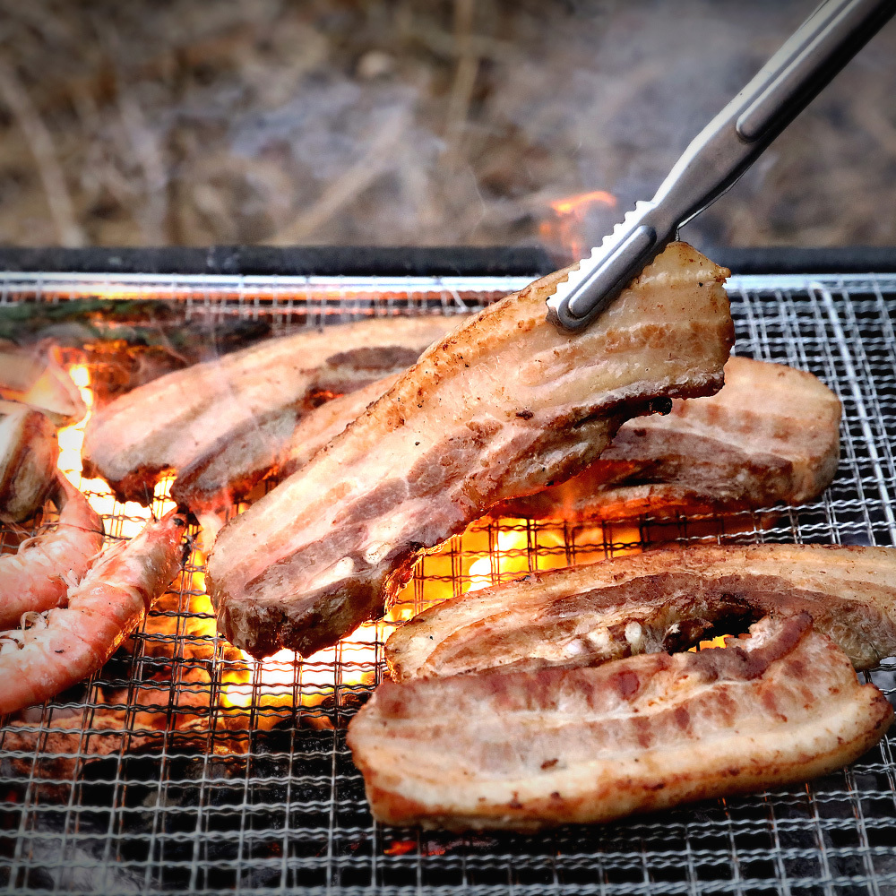
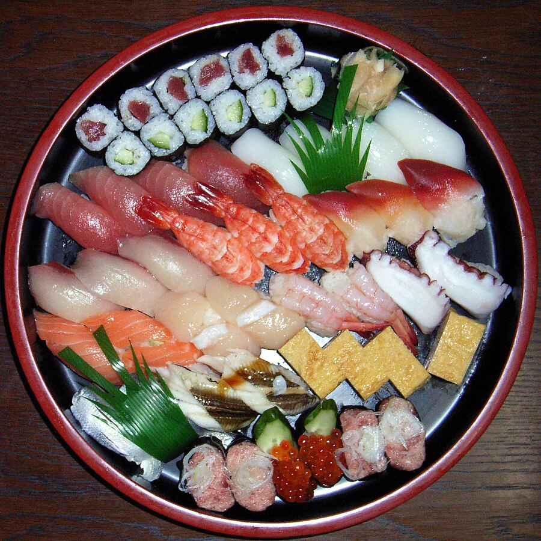
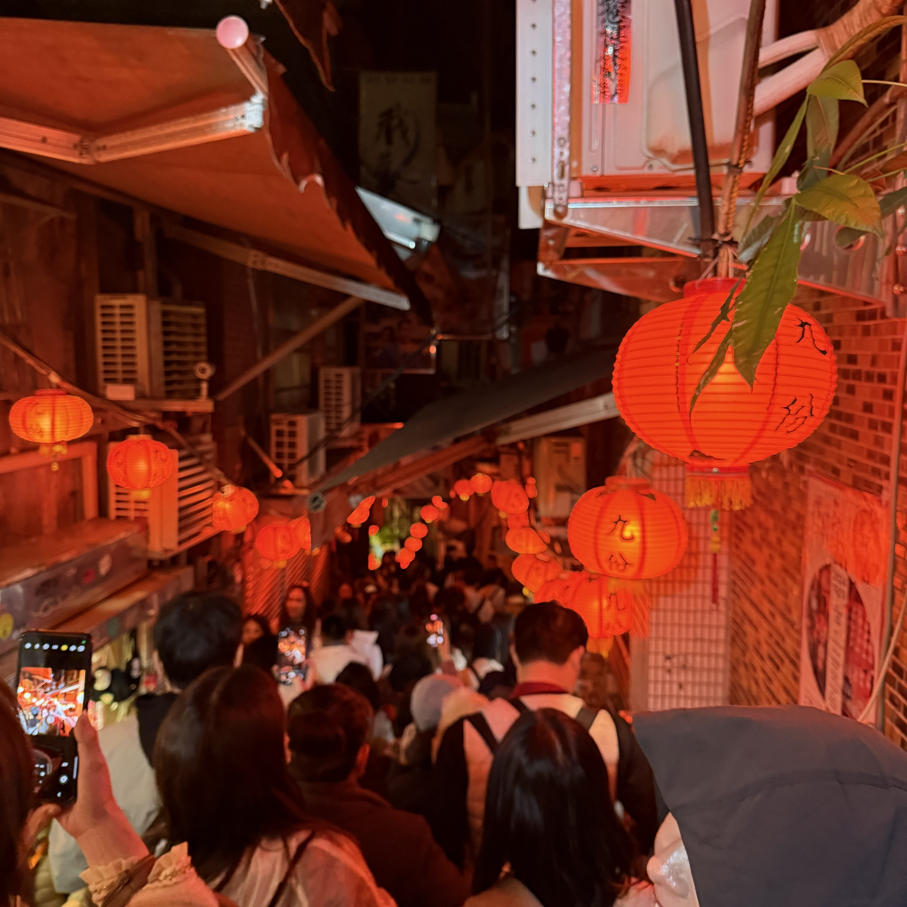
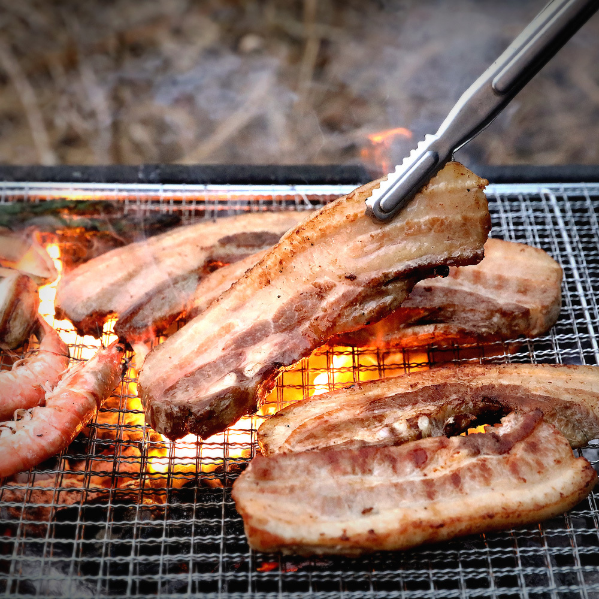
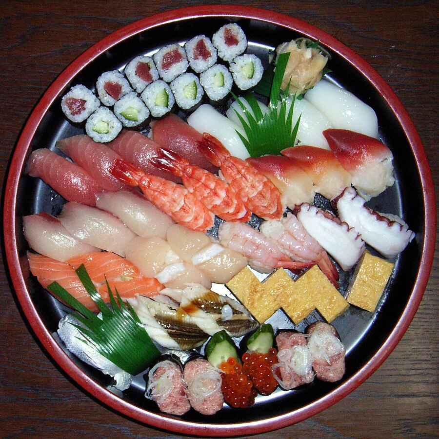
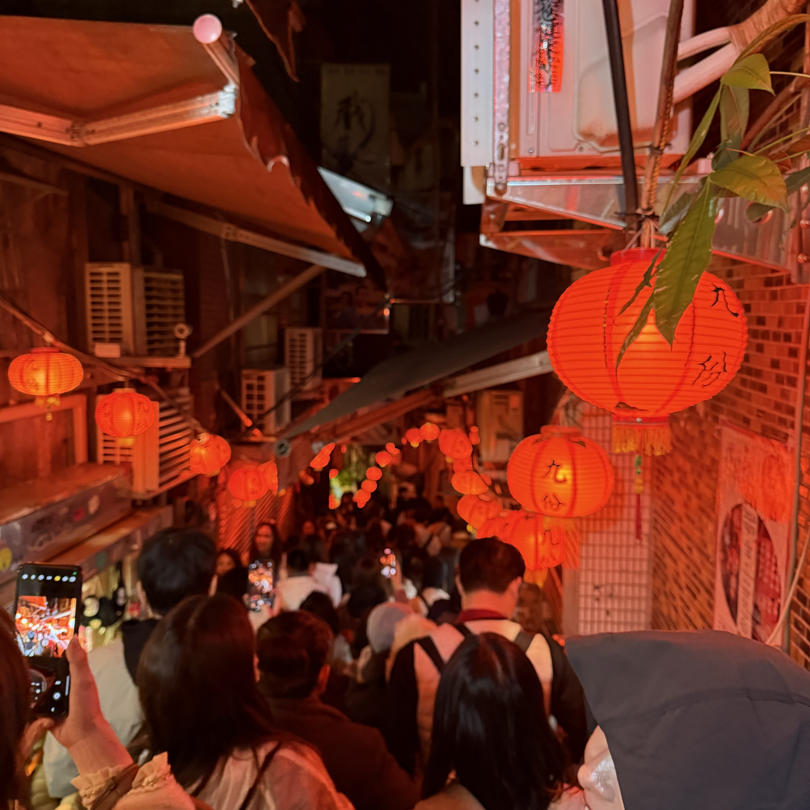

인생 영화 - 죽은 시인의 사회

1989년의 영화. 피터 위어 연출, 로빈 윌리엄스 주연으로 개봉한 미국 영화. 배급은 월트 디즈니 컴퍼니 계열인 터치스톤 픽처스. 1959년 버몬트의 성공회 귀족 학교 분위기가 물씬 풍기는 사립학교에서 벌어지는 일련의 교육 활동을 주 소재로 하고 있으며, 사실 이런 내용은 이 영화의 각본가 톰 슐만의 자전적인 경험을 바탕으로 하고 있다.
안녕하세요, 저는 안드로이드 개발자를 꿈꾸는 크림입니다. 제게 개발자란 '생각하는 것을 현실로 만드는 사람'입니다. 우아한테크코스를 통해 매일 몰입 경험을 느끼고 있어 행복합니다. 잘 부탁드립니다.☺️
 





1989년의 영화. 피터 위어 연출, 로빈 윌리엄스 주연으로 개봉한 미국 영화. 배급은 월트 디즈니 컴퍼니 계열인 터치스톤 픽처스. 1959년 버몬트의 성공회 귀족 학교 분위기가 물씬 풍기는 사립학교에서 벌어지는 일련의 교육 활동을 주 소재로 하고 있으며, 사실 이런 내용은 이 영화의 각본가 톰 슐만의 자전적인 경험을 바탕으로 하고 있다.

아비치의 첫 번째 정규 앨범인 True의 리드 싱글. 보컬은 미국 출신의 R&B 가수인 Aloe Blacc가 맡았다. LEVELS로 데뷔한 슈퍼 루키였던 아비치를 슈퍼스타로 만들어 준 곡으로, 한때 스포티파이에서 가장 많이 스트리밍된 곡이자 처음으로 스포티파이에서 2억 스트리밍을 넘은 노래다.